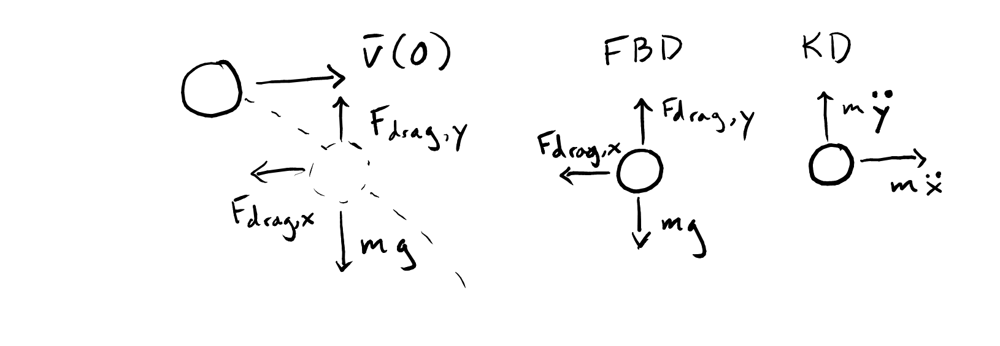
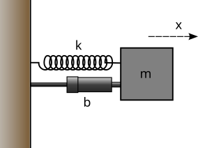

Content modified under Creative Commons Attribution license CC-BY 4.0, code under BSD 3-Clause License © 2020 R.C. Cooper
Homework#
import numpy as np
import pandas as pd
import matplotlib.pyplot as plt
plt.style.use('fivethirtyeight')
Problems Part 1#
Instead of using \(\frac{\Delta v}{\Delta t}\), you can use the numpy polyfit to determine the acceleration of the ball.
a. Use your coordinates from the saved .npz file you used above to load your projectile motion data
npz_coords = np.load('projectile_coords.npz') t = npz_coords['t'] x = npz_coords['x'] y = npz_coords['y']
b. Calculate \(v_x\) and \(v_y\) using a finite difference again, then do a first-order polyfit to \(v_x-\) and \(v_y-\) vs \(t\). What is the acceleration now?
c. Now, use a second-order polynomial fit for x- and y- vs t. What is acceleration now?
d. Plot the polyfit lines for velocity and position (2 figures) with the finite difference velocity data points and positions. Which lines look like better e.g. which line fits the data?
#Part a, loading projectile motion data
npz_coords = np.load('../data/projectile_coords.npz')
t = npz_coords['t']
x = npz_coords['x']
y = npz_coords['y']
#Part b, calculating v_x and v_y with first order polyfit
vx = np.gradient(x, t)
vy = np.gradient(y, t)
# Perform a first-order polynomial fit to the velocity data
coeffs_vx = np.polyfit(t, vx, 1)
coeffs_vy = np.polyfit(t, vy, 1)
print("Accel x: ",coeffs_vx[0])
print("Accel y: ",coeffs_vy[0])
Accel x: -0.18222554144884315
Accel y: -10.210604929051529
#Part c, calculating v_x and v_y with second order polyfit
coeffs_ax = np.polyfit(t, x, 2)
coeffs_ay = np.polyfit(t, y, 2)
# The acceleration is given by twice the coefficient of the t^2 term (the quadratic coefficient)
ax = 2 * coeffs_ax[0]
ay = 2 * coeffs_ay[0]
print("Accel x: ",ax)
print("Accel y: ",ay)
Accel x: -0.14083004374265978
Accel y: -10.222980902592553
t_fit = np.linspace(t.min(), t.max(), 100)
vx_fit = np.polyval(coeffs_vx, t_fit)
vy_fit = np.polyval(coeffs_vy, t_fit)
# Plot for velocity
plt.figure(figsize=(14, 6))
plt.subplot(1, 2, 1)
plt.plot(t, vx, 'o', label='Data vx')
plt.plot(t_fit, vx_fit, '-', label='Fit vx')
plt.xlabel('Time (t)')
plt.ylabel('Velocity (vx)')
plt.title('First-order Polynomial Fit for vx')
plt.legend()
plt.subplot(1, 2, 2)
plt.plot(t, vy, 'o', label='Data vy')
plt.plot(t_fit, vy_fit, '-', label='Fit vy')
plt.xlabel('Time (t)')
plt.ylabel('Velocity (vy)')
plt.title('First-order Polynomial Fit for vy')
plt.legend()
plt.tight_layout()
plt.show()
# For position (Second-order fit)
x_fit = np.polyval(coeffs_ax, t_fit)
y_fit = np.polyval(coeffs_ay, t_fit)
# Plot for position
plt.figure(figsize=(14, 6))
plt.subplot(1, 2, 1)
plt.plot(t, x, 'o', label='Data x')
plt.plot(t_fit, x_fit, '-', label='Fit x')
plt.xlabel('Time (t)')
plt.ylabel('Position (x)')
plt.title('Second-order Polynomial Fit for x')
plt.legend()
plt.subplot(1, 2, 2)
plt.plot(t, y, 'o', label='Data y')
plt.plot(t_fit, y_fit, '-', label='Fit y')
plt.xlabel('Time (t)')
plt.ylabel('Position (y)')
plt.title('Second-order Polynomial Fit for y')
plt.legend()
plt.tight_layout()
plt.show()
'''The first-order ploynomial for v_y and both the second order polynomial fits fit the data points well.'''
'The first-order ploynomial for v_y and both the second order polynomial fits fit the data points well.'
Not only can you measure acceleration of objects that you track, you can look at other physical constants like coefficient of restitution, \(e\) .
During a collision with the ground, the coefficient of restitution is
\(e = -\frac{v_{y}'}{v_{y}}\) .
Where \(v_y'\) is y-velocity perpendicular to the ground after impact and \(v_y\) is the y-velocity before impact.
a. Calculate \(v_y\) and plot as a function of time from the data
'../data/fallingtennisball02.txt'b. Find the locations when \(v_y\) changes rapidly i.e. the impact locations. Get the maximum and minimum velocities closest to the impact location. Hint: this can be a little tricky. Try slicing the data to include one collision at a time before using the
np.minandnp.maxcommands.c. Calculate the \(e\) for each of the three collisions
#Part a
data = np.loadtxt('../data/fallingtennisball02.txt')
t_data = data[:, 0]
vy_data = data[:, 1]
#Plot as a function of time
plt.figure(figsize=(10, 5))
plt.plot(t_data, vy_data, label='vy (y-velocity)')
plt.xlabel('Time (s)')
plt.ylabel('Velocity (vy) [m/s]')
plt.title('y-Velocity vs Time')
plt.legend()
plt.show()
#Part b
grad_vy = np.gradient(vy_data, t_data)
#Define a threshold to identify significant changes
threshold = np.max(np.abs(grad_vy)) * 0.5
#Find indices where the change is above the threshold
impact_indices = np.where(np.abs(grad_vy) > threshold)[0]
#Now we slice the data around these impact indices to find the min and max velocities around the impacts
#We use a window size to look around each impact point, this might need adjusting
window_size = 5
e_values = []
for index in impact_indices:
#Make sure we don't go out of bounds
start = max(index - window_size, 0)
end = min(index + window_size, len(vy_data))
#Slice the data to include only one collision at a time
slice_vy = vy_data[start:end]
#Get the maximum and minimum velocities closest to the impact location
vy_after = np.min(slice_vy) # After impact (going upwards so minimum value)
vy_before = np.max(slice_vy) # Before impact (coming downwards so maximum value)
print("Min: ",vy_after)
print("Max: ",vy_before)
Min: -0.008310771625688282
Max: 0.01369118622833752
#Part c
#Similar process to part b
for index in impact_indices:
start = max(index - window_size, 0)
end = min(index + window_size, len(vy_data))
slice_vy = vy_data[start:end]
vy_after = np.min(slice_vy)
vy_before = np.max(slice_vy)
#Calculate the coefficient of restitution for each collision
e = -vy_after / vy_before
e_values.append(e)
#Get first three collision values
e_values = e_values[:3]
print("e values for three collisions: ",e_values)
e values for three collisions: [-0.9798619224416076, -0.9797466070709724, -0.9796306295428018]
Problems Part 2#
Integrate the
fall_dragequations for a tennis ball and a lacrosse ball with the same initial conditions as above. Plot the resulting height vs time.
Given: y(0) = 1.6 m, v(0) = 0 m/s
ball |
diameter |
mass |
|---|---|---|
tennis |
\(6.54\)–\(6.86 \rm{cm}\) |
\(56.0\)–\(59.4 \rm{g}\) |
lacrosse |
\(6.27\)–\(6.47 \rm{cm}\) |
\(140\)–\(147 \rm{g}\) |
Is there a difference in the two solutions? At what times do the tennis ball and lacrosse balls reach the ground? Which was first?
g = 9.81
rho = 1.225
C_d = 0.47
dt = 0.001
t_max = 5
#Given diameters and masses for the tennis and lacrosse balls
d_tennis = (6.54 + 6.86) / 2 / 100 # converting cm to m
m_tennis = 59.4 / 1000 # converting g to kg
A_tennis = np.pi * (d_tennis / 2)**2 # cross-sectional area
d_lacrosse = (6.27 + 6.47) / 2 / 100 # converting cm to m
m_lacrosse = (140 + 147) / 2 / 1000 # converting g to kg
A_lacrosse = np.pi * (d_lacrosse / 2)**2 # cross-sectional area
#Function to calculate the drag force
def drag_force(v, A):
return 0.5 * rho * C_d * A * v**2
#Euler's method to simulate the fall with drag
def euler_method(A, m):
t = 0
y = 1.6 #initial height
v = 0 #initial velocity
times = [t]
heights = [y]
while t <= t_max and y > 0:
#Calculate the forces
gravity = m * g
drag = drag_force(v, A)
#Update the velocity and position using Euler's method
v = v - (gravity - drag) / m * dt
y = y + v * dt
#Store the values
times.append(t)
heights.append(y)
#Increment time
t += dt
return times, heights
#Simulate the fall for both balls
times_tennis, heights_tennis = euler_method(A_tennis, m_tennis)
times_lacrosse, heights_lacrosse = euler_method(A_lacrosse, m_lacrosse)
#Convert to pandas DataFrame for easier handling
df_tennis = pd.DataFrame({'Time': times_tennis, 'Height': heights_tennis})
df_lacrosse = pd.DataFrame({'Time': times_lacrosse, 'Height': heights_lacrosse})
#Plot the resulting height vs time for both balls
plt.figure(figsize=(10, 6))
plt.plot(df_tennis['Time'], df_tennis['Height'], label='Tennis Ball')
plt.plot(df_lacrosse['Time'], df_lacrosse['Height'], label='Lacrosse Ball')
plt.xlabel('Time (s)')
plt.ylabel('Height (m)')
plt.title('Height vs Time for Tennis and Lacrosse Balls (Euler Method)')
plt.legend()
plt.grid(True)
plt.show()
#Find the time when each ball reaches the ground using the last entry before the height becomes negative or zero
time_to_ground_tennis = df_tennis.iloc[(df_tennis['Height'] > 0).cumsum().argmax() - 1]['Time']
time_to_ground_lacrosse = df_lacrosse.iloc[(df_lacrosse['Height'] > 0).cumsum().argmax() - 1]['Time']
print("Time for tennis ball to hit ground: ",time_to_ground_tennis, "s")
print("Time for lax ball to hit ground: ",time_to_ground_lacrosse, "s")
'''There is a small difference between when the tennis and lacrosse balls hit the ground. The lacrosse ball hits the ground slightly before the tennis ball.'''
Time for tennis ball to hit ground: 0.5710000000000004 s
Time for lax ball to hit ground: 0.5690000000000004 s
'There is a small difference between when the tennis and lacrosse balls hit the ground. The lacrosse ball hits the ground slightly before the tennis ball.'

The figure above shows the forces acting on a projectile object, like the lacrosse ball from Flipping Physics that you analyzed in lesson 01_Catch_Motion. Consider the 2D motion of the lacrosse ball, now the state vector has two extra variables,
\( \mathbf{y} = \begin{bmatrix} x \\ v_x \\ y \\ v_y \end{bmatrix}, \)
and its derivative is now,
\(\dot{\mathbf{y}} = \begin{bmatrix} v_x \\ -c v_x^2 \\ v_y \\ g - cv_y^2 \end{bmatrix},\)
where \(c= \frac{1}{2} \pi R^2 \rho C_d\).
Problems Part 3#
Show that the implicit Heun’s method has the same second order convergence as the Modified Euler’s method. Hint: you can use the same code from above to create the log-log plot to get the error between \(2\cos(\omega t)\) and the
heun_stepintegration. Use the same initial conditions x(0) = 2 m and v(0)=0m/s and the same RHS function,springmass.
import numpy as np
import matplotlib.pyplot as plt
from scipy.optimize import fsolve
#Define the spring-mass system RHS function
def spring_mass(t, y):
# y[0] = x, y[1] = v
k = 1 # spring constant
m = 1 # mass
dydt = [y[1], -k/m * y[0]]
return np.array(dydt)
#Define the implicit Heun's method (trapezoidal rule)
def heun_step(t, y, dt, rhs):
# Predictor step (Euler's method)
y_pred = y + dt * rhs(t, y)
# Corrector step (trapezoidal rule)
def F(y_next):
return y_next - dt * 0.5 * (rhs(t, y) + rhs(t + dt, y_next)) - y
# Solve for the next value implicitly
y_next = fsolve(F, y_pred)
return y_next
#Initial conditions
y0 = np.array([2.0, 0.0]) # x(0) = 2, v(0) = 0
t0 = 0
tf = 10
analytical_solution = lambda t: 2 * np.cos(t)
#Range of step sizes for error analysis
step_sizes = np.logspace(-4, -1, 10)
errors = []
#Perform integration and error analysis for different step sizes
for dt in step_sizes:
times = np.arange(t0, tf + dt, dt)
y = y0
numerical_solution = [y[0]]
#Time integration using Heun's method
for t in times[:-1]:
y = heun_step(t, y, dt, spring_mass)
numerical_solution.append(y[0])
#Calculate the error at the final time
error = np.abs(analytical_solution(times[-1]) - numerical_solution[-1])
errors.append(error)
#Plotting the log-log plot of the error
plt.figure(figsize=(10, 6))
plt.loglog(step_sizes, errors, marker='o', linestyle='-', label='Implicit Heun\'s method error')
plt.xlabel('Step size (log scale)')
plt.ylabel('Error at final time (log scale)')
plt.title('Log-Log Plot of Error vs. Step Size for Implicit Heun\'s Method')
plt.legend()
plt.grid(True, which="both", ls="--")
plt.show()

In the image above, you have a spring, mass, and damper. A damper is designed to slow down a moving object. These devices are typical in automobiles, mountain bikes, doors, any place where oscillations may not be desired, but motion is required. The new differential equation, if F(t)=0, that results from this addition is
\(\ddot{x} = -\frac{b}{m}\dot{x} -\frac{k}{m}x\)
or keeping our natural frequency above,
\(\ddot{x} = -\zeta\omega\dot{x} -\omega^2x\)
where \(\zeta\) is a new constant called the damping ratio of a system. When \(\zeta\gt 1\), there are no oscillations and when \(0<\zeta<1\) the system oscillates, but decays to v=0 m/s eventually.
Create the system of equations that returns the right hand side (RHS) of the state equations, e.g. \(\mathbf{\dot{y}} = f(\mathbf{y}) = RHS\)
Use \(\omega = 2\) rad/s and \(\zeta = 0.2\).
def smd(state, omega=2.0, zeta=0.2):
"""
Computes the right-hand side of the spring-mass-damper differential equation, without friction.
Arguments
---------
state : array of two dependent variables [x, v]^T
Returns
-------
derivs : array of two derivatives [v, zeta*omega*v - omega**2*x]^T
"""
x, v = state # Unpack the state vector
derivs = np.array([v, -zeta*omega*v - omega**2*x]) # Compute derivatives
return derivs
#Example state vector [x, v]^T where x=2 (initial position) and v=0 (initial velocity)
state = np.array([2.0, 0.0])
#Compute the derivatives for the example state
derivatives = smd(state)
print("Derivatives: ",derivatives)
Derivatives: [ 0. -8.]
Use three methods to integrate your
smdfunction for 3 time periods of oscillation and initial conditions x(0)=2 m and v(0)=0 m/s. Plot the three solutions on one graph with labels.
a. Euler integration
b. second order Runge Kutta method (modified Euler method)
c. the implicit Heun’s method
How many time steps does each method need to converge to the same results? Remember that each method has a certain convergence rate
#Define the smd function from the second picture
def smd(state, omega=2.0, zeta=0.2):
x, v = state # Unpack the state vector
derivs = np.array([v, -zeta*omega*v - omega**2*x]) # Compute derivatives
return derivs
#Initial conditions
x0 = 2.0 # initial position
v0 = 0.0 # initial velocity
state = np.array([x0, v0])
#Simulation parameters
t_end = 3 * (2 * np.pi / omega) # three periods of oscillation
dt = 0.01 # time step
#Euler method integration
def euler_integration(state, t_end, dt):
t = 0
states = [state]
while t < t_end:
state = state + dt * smd(state)
states.append(state)
t += dt
return np.array(states)
#Second order Runge-Kutta (Modified Euler) integration
def rk2_integration(state, t_end, dt):
t = 0
states = [state]
while t < t_end:
k1 = smd(state)
k2 = smd(state + dt * k1)
state = state + (dt / 2) * (k1 + k2)
states.append(state)
t += dt
return np.array(states)
#Heun's method integration
def heun_integration(state, t_end, dt):
t = 0
states = [state]
while t < t_end:
initial_slope = smd(state)
end_state = state + dt * initial_slope
corrected_slope = smd(end_state)
state = state + (dt / 2) * (initial_slope + corrected_slope)
states.append(state)
t += dt
return np.array(states)
#Perform the integrations
states_euler = euler_integration(state, t_end, dt)
states_rk2 = rk2_integration(state, t_end, dt)
states_heun = heun_integration(state, t_end, dt)
#Extract positions for plotting
positions_euler = states_euler[:, 0]
positions_rk2 = states_rk2[:, 0]
positions_heun = states_heun[:, 0]
times = np.arange(0, t_end+dt, dt)
#Plot the results
plt.figure(figsize=(10, 6))
plt.plot(times, positions_euler, label='Euler Integration')
plt.plot(times, positions_rk2, label='RK2 Integration')
plt.plot(times, positions_heun, label='Heun Integration')
plt.xlabel('Time (s)')
plt.ylabel('Position (m)')
plt.title('Numerical Integration Comparison')
plt.legend()
plt.grid(True)
plt.show()
'''For Euler's method, the error is proportional to the time step (first-order). For RK2 and Heun's method, the error is proportional to the square of the time step (second-order)'''
---------------------------------------------------------------------------
NameError Traceback (most recent call last)
Cell In[12], line 13
10 state = np.array([x0, v0])
12 #Simulation parameters
---> 13 t_end = 3 * (2 * np.pi / omega) # three periods of oscillation
14 dt = 0.01 # time step
16 #Euler method integration
NameError: name 'omega' is not defined
Problems Part 3#
One of the main benefits of a bracketing method is the stability of solutions. Open methods are not always stable. Here is an example. One way engineers and data scientists model the probability of failure is with a sigmoid function e.g. this Challenger O-ring case study
The Challenger explosion was a terrible incident that occurred due to the failure of an O-ring. The post-mortem data analysis showed that at low temperatures the O-rings were brittle and more likely to fail. You can use the function \(\sigma(T)\) to determine the point at which there is a 50% chance of O-ring failure. Using the pass-fail data, the two constants are
\(a_0 = 15.043\)
\(a_1 = 0.232\)
a. Plot the function \(\sigma(T)\) for \(T=0-100^{o}F\). Where do you see the function cross 50% (0.5)?
b. Create two functions f_T and dfdT where f_T=\(f(T)=\sigma(T) - 0.5\) and dfdT=\(\frac{df}{dT}\)
c. Use the incsearch and newtraph functions to find the root of f(T). When does Newton-Raphson fail to converge? Why does it fail? Hint: if you’re stuck here, take a look at this youtube video finding an interval of convergence for the Newton-Raphson method. Look at the animation of how the method converges and diverges.
from scipy.optimize import newton, brentq
#Part a
#Constants for the sigmoid function
a0 = 15.043
a1 = 0.232
#Sigmoid function definition
def sigma(T):
return 1 / (1 + np.exp(a0 - a1 * T))
#Temperature range for plotting
T_range = np.linspace(0, 100, 300) # Fahrenheit
sigma_values = sigma(T_range)
#Plotting
plt.figure(figsize=(10, 6))
plt.plot(T_range, sigma_values, label='Probability of O-ring Failure')
plt.axhline(0.5, color='red', linestyle='--', label='50% Failure Probability')
plt.xlabel('Temperature (F)')
plt.ylabel('Probability')
plt.title('Probability of O-ring Failure vs. Temperature')
plt.legend()
plt.grid(True)
plt.show()
def f(T):
return sigma(T) - 0.5
T_cross_50 = brentq(f, 0, 100)
print(f"The function crosses 50% at T = {T_cross_50:.2f} F.")
#Part b
#Function for the temperature at which the probability of failure is 50%
def f_T(T):
return sigma(T) - 0.5
#Derivative of the function with respect to temperature
def dfdT(T):
e_term = np.exp(a0 - a1 * T)
return -a1 * e_term / (1 + e_term)**2
#Part c
#Search for brackets in which the function changes sign
def incsearch(f, xmin, xmax, n):
brackets = []
xs = np.linspace(xmin, xmax, n)
fs = f(xs)
for i in range(n-1):
if np.sign(fs[i]) != np.sign(fs[i+1]):
brackets.append((xs[i], xs[i+1]))
return brackets
#Find the root using Newton's method within a bracket
def newtraph(f, df, bracket):
try:
root = newton(f, x0=np.mean(bracket), fprime=df)
return root
except RuntimeError as e:
print(f"Failed to converge in the bracket {bracket}: {e}")
return None
#Use the functions to find the root
xmin = 0
xmax = 100
n = 1000 # number of points to search for brackets
#Find brackets
brackets = incsearch(f_T, xmin, xmax, n)
#Find roots within brackets
roots = [newtraph(f_T, dfdT, bracket) for bracket in brackets]
#Print the roots
for root in roots:
if root is not None:
print(f"Found root at T = {root:.2f} F")
#In case of multiple brackets, choose the first valid root
valid_roots = [root for root in roots if root is not None]
if valid_roots:
T_root = valid_roots[0]
print(f"The temperature at which there is a 50% chance of O-ring failure is approximately {T_root:.2f} F.")
else:
print("No valid roots found.")
In the Shooting Method example, you determined the initial velocity after the first bounce by specifying the beginning y(0) and end y(T) for an object subject to gravity and drag. Repeat this analysis for the time period just after the second bounce and just before the third bounce. The indices are given below for t[1430:2051] = 1.43-2.05 seconds.
a. What is the velocity just after the second bounce?
b. What is the coefficient of restitution for the second bounce? Hint: use the ratio of the last velocity from above to the initial velocity calculated here.
filename = '../data/fallingtennisball02.txt'
t, y = np.loadtxt(filename, usecols=[0,1], unpack=True)
i0=1430
ie=2051
print(t[i0],t[ie])
plt.plot(t,y)
plt.plot(t[i0:ie],y[i0:ie],'s')
filename = '../data/fallingtennisball02.txt'
t, y = np.loadtxt(filename, usecols=[0, 1], unpack=True)
# Indices given for the analysis
i0 = 1430
ie = 2051
# Since we are looking at discrete data points, we can approximate the velocities by finite differences
v_before = (y[i0] - y[i0 - 1]) / (t[i0] - t[i0 - 1])
v_after = (y[i0 + 1] - y[i0]) / (t[i0 + 1] - t[i0])
#Part a
for i in range(i0, ie):
if y[i] > 0:
v_after = (y[i] - y[i - 1]) / (t[i] - t[i - 1])
break
#Part b
e = -v_after / v_before
print("Velocity: ",v_after, "m/s")
print("Coefficient: ",e)